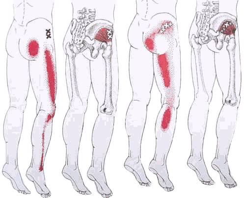
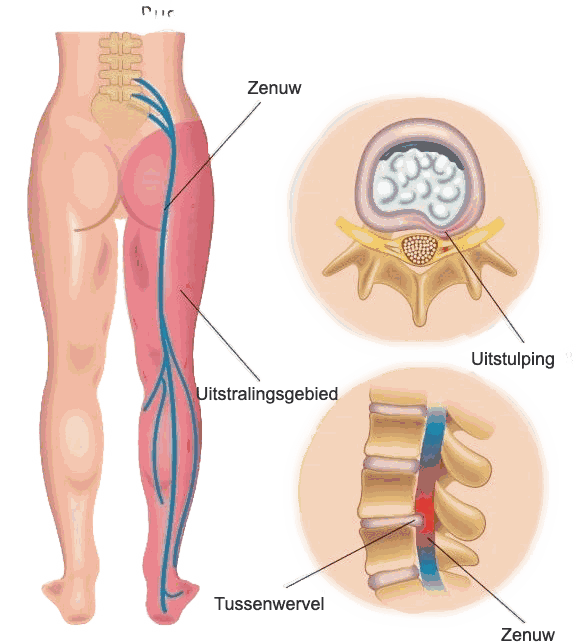
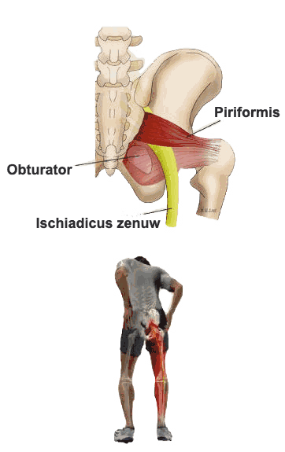

Rugklachten
(Lage) Rugklachten kunnen heel vervelend zijn en kent, net als de nek, een breed aantal oorzaken waarvan “verkeerde” houding en stress de meest voorkomende zijn.
Wat deze oorzaken allemaal gemeen hebben met elkaar is dat het vormen van overbelasting zijn. Dit kan gaan om vormen van structurele overbelasting (stress of een verkeerde houding) ofwel vormen van acute overbelasting (zoals het plotseling maken van een verkeerde beweging; spit; acuut lumbago).
Wat er vaak gebeurt is dat bepaalde spieren verkrampen. Hierdoor krijg je een bewegingsbeperking en treedt er pijn op. We noemen dit wel het defense musculair principe: Als er een wervel niet lekker zit of een spiertje verrekt is en pijn geeft, kan als gevolg hiervan de gehele rug en bil zich als reactie “op slot” ofwel vastzetten en hiermee de klachten in stand houden of verergeren. Er kan sprake zijn van pijn in de rug of bil regio zelf, of het manifesteert zich als uitstraling vanuit de rug naar perifere lichaamsdelen zoals bil, been, lies, knie, kuit, voet. Er zijn meerdere verklaringsmodellen waarbij de twee voornaamste hieronder uitgelegd.

Referred Pain (Afgeleide Pijn) Principe | Myofasciale Triggerpoints (Dry Needling)
Dit evidence based principe verklaart hoe bijvoorbeeld pijn in de bil, lies of knie kan ontstaan door spierspanning in de lage rug.
Een spier wordt namelijk aangestuurd vanuit de hersenen via zenuwbanen die op een bepaald niveau de lumbale wervelkolom uittreden. Vanuit dit niveau van de wervelkolom ontvangen en sturen de hersenen ook informatie van en naar andere spieren en huidgebieden. Deze in- en uittredende informatie kan met elkaar interfereren waardoor bijvoorbeeld een gespannen spier in de rug → pijnklachten geeft aan het bovenbeen.
Vanuit dit principe komt ook het begrip myofasciale triggerpoints waarop de alom geprezen en succesvolle methode Dry Needling is gebaseerd. Een trigger point is een (druk)pijnlijke lokale samentrekking van een klein deel van de spier en voelt aan als een “knoop.” Door druk op een trigger point kan een herkenbare uitstralende pijn op een andere plaats in het lichaam ontstaan. Iedere spier heeft een uniek en karakteristiek uitstralingsgebied, kenmerkend voor de betreffende spier. Het zijn bepaalde punten in de spier die anatomisch gezien de meeste spanning vasthouden en die bij een release, de gehele spier kunnen doen ontspannen. Hier meer over bij DRY NEEDLING.


Een andere verklaring zegt dat uitstraling verklaard kan worden op basis van zenuwen die bekneld worden. Deze beknellingen kunnen in het verloop van de zenuw plaats vinden of hun oorsprong al hebben vanuit de rug (dermatomen) en geven respectievelijk een ander klachtenbeeld. Beknelling vanuit de rug kan bijvoorbeeld duiden op een hernia of derangement (zie McKenzie). Beknelling in het verloop van de zenuw kan komen doordat bepaalde spieren gespannen en hierdoor verdikt zijn, en tegen een zenuw drukken. Een voorbeeld hiervan is het Piriformis syndroom ofwel Ischias genoemd. Hierbij is de piriformis spier, een kleine spier in de bil, gespannen en drukt daardoor tegen de ischiadicus zenuw. Dit heeft vaak pijn in het been als gevolg. Afhankelijk van het klachtenbeeld kan de therapeut onderscheid maken en herleiden wat de oorzaak van de klacht is.